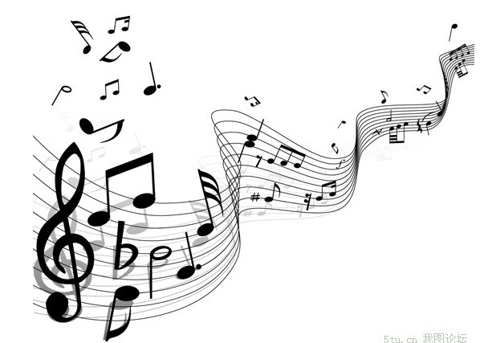

|  | Welcome to the world of music! |
|
音乐是用组织音构成的听觉意象，来表达人们的思想感情与社会现实生活的一种艺术形式。也是最能即时打动人的艺术形式之一。旋律响起人们往往无法抗拒的立即处于音乐的氛围当中。任何一种艺术形式都有自己表情达意、塑造艺术意象的表现形式。比如舞蹈是通过肢体动作、面部表情，绘画是通过线条、色彩、构图，文学是通过字、词、句、篇来体现艺术意象。通常，人们正是以表现手段的不同来区分艺术的不同种类，例如不同的乐器。音乐还能表现出乐手们和音乐创作者的用心。 根据《礼记》中《乐记》详细记载了“凡音之起，由人心生也，人心之动，物使之然也，感于物而动，故形于声，声相应，故生变。 种介绍简单明了的涵盖了音乐的声音变化与人心情感之间的联系，如果我们进一步翻查古籍进一步推敲，就能对平时听到的有关音乐词汇涵义有更深入的了解。 声：在自然中容易被人耳捕捉得到的能量波动。 音：拥有稳定变化规则并且可控制的持续声波。 乐：经过组织挑选后的悦耳声波。 调：根据某个规则进行挑选过后的音集合。 律：对集合音进行更加规律的排列顺序。 段：在一定时间内完成某个 曲：按照一个整体对所有上述提到的声音乐调律段进行整体的组织。 这些词语相互组合，就构成了声音，音乐，乐音，音调，乐调等词。（声乐，是以人声作为乐器的简称。） 声音艺术 音乐以声音为表现手段的艺术形式，意象的塑造，以有组织的音为材料来完成的。因此，如同文学是语言的艺术一样，音乐是声音的艺术。这是音乐艺术的基本特征之一。作为音乐艺术表现手段的声音，有与自然界的其他声音不同的一些特点。 语言具有一种约定性的语义，每一句话，甚至每一个字都具有特定的涵义。这种涵义在运用该语言的社会范围内是被公认的，是一种约定俗成；音乐的声音却完全不同，它仅仅限定在艺术的范围内，只作为一种艺术交往而存在；任何音乐中的声音，它本身绝不会有像语言那样十分确定的含意，它们是非语义性的。
听觉艺术 音乐既然是声音的艺术，那么，它只能诉诸于人们的听觉，所以，音乐又是一种听觉艺术。心理学的定向反射和探究反射原理告诉我们，一定距离内的各种外在刺激中，声音最能引起人们的注意，它能够迫使人们的听觉器官去接受声音，这决定了听觉艺术较之视觉艺术更能直接地作用于人们的情感，震撼人们的心灵。 音乐只能用声音来表现，用听觉来感受，但这并不等于说人们在创作和欣赏音乐时，大脑皮层上只有与听觉相对应的部位是兴奋的，而其他部位都处于抑制状态之中。实际上，音乐家不止是通过听觉的渠道，而是用整个身心去感受和体验、认识和表现生活的，这同其他门类的艺术家并没有什么区别。不同的是在艺术构思和艺术表现的时候，音乐家是把个人的多方面的感受，通过形象思维凝聚为听觉意象，然后用具体的音响形式表现出来。 因此，音乐作品中所表现的思想情感，不是单纯的听觉感受，而是整体的感受。同样，人们在欣赏音乐的时候，虽然主要是通过听觉的渠道，接受的是听觉的刺激，但由于通感的作用，也可能引起视觉意象，产生丰富生动的联想和想象，进而引起强烈的感情反应，体验到音乐家在作品中表达的思想感情和情境，获得美感，并为之感动。
情感艺术 在所有的艺术形式中，音乐是最擅长于抒发情感、最能拨动人心弦的艺术形式，它借助声音这个媒介来真实地传达、表现和感受审美情感。音乐在传达和表现情感上，优于其他艺术形式，是因为它所采用的感性材料和审美形式——声音最合于情感的本性，最适宜表达情感。或庄严肃穆，或热烈兴奋，或悲痛激愤，或缠绵细腻，或如泣如诉。音乐可以更直接、更真实、更深刻地表达人的情感。那么，音乐为什么能够用有组织的声音来表达人的情感呢，一种理论认为，音乐的表情性来自于音乐对人的有表情性因素的语言的模仿。人的语言用语音、声调、语流、节奏、语速等表情手段配合语义来表情达意，而音乐的音色、音调起伏、节奏速度等表现手段能起到与语言的表情手段同样的作用。 个人认为，音乐的声音形态与人类情感之间存在着相似性，具有某种“同构关系”，这是音乐能表达人情感的根本原因。音乐理论家于润洋曾指出：“音响结构之所以能够表达特定的情感，其根本原因在于这二者之间存在着一个极其重要的相似点，那就是这二者都是在时间中展示和发展，在速度、力度、色调上具有丰富变化的、极富于动力性的过程。这个极其重要的相似点正是这二者之间能够沟通的桥梁。”比如“喜悦”，它是人高兴、欢乐的感情表现。一般来说，这种感情运动呈现出一种跳跃、向上的运动形态，其色调比较明朗，运动速度与频率较快。表现“喜悦”的感情的音乐，一般也采取类似的动态结构，如民乐曲《喜洋洋》，用较快的速度、跳荡的音调等表现手段表达了人们喜悦的情感。
时间艺术 雕塑、绘画等艺术形式凝固在空间，使人一目了然。我们欣赏美术作品，首先看到美术作品的整体，然后，才去品味它的细节。而音乐则不同，音乐要在时间里展开、在时间里流动。我们欣赏音乐，首先从细节开始，从局部开始，直到全曲奏（唱）完，才会给我们留下整体印象。只听音乐作品中的个别片断，不可能获得完整的音乐意象。所以，音乐艺术又是一种时间艺术。 作为听觉艺术的音乐意象是在时间中展开的，是随着时间的延续在运动中呈现、发展、结束的。所谓“音乐意象”，指的是整个音乐作品所表现出的艺术家的思想感情并在欣赏者的思想感情中所唤起的意象或意境。例如，《春江花月夜》用甜美、安适、恬静的曲调，表现了在江南月夜泛舟于景色如画的春江之上的感受，创造了令人神往的音乐意境。 音乐作品不像文学或绘画那样，只要作者创作完成，创作过程结束，就可以直接供人们欣赏了。音乐作品必须通过表演这个中间环节，才能把作品表达的意象传达给欣赏者，实现其艺术作品的审美价值。所以，音乐又是表演的艺术，是需要由表演进一步再创造的艺术。 当作曲家把生动的乐思以乐谱的形式记录下来的时候，就已经抽掉了它的灵魂，所剩下的不过是一个没有生命的乐音符号系列。而使音乐作品重新获得生命，把乐谱变成有血有肉的活的音乐的方式，就是音乐表演。如果没有音乐表演，音乐作品永远只能以乐谱的形式存在，而不会成为真正的音乐。 无论哪一位作曲家写下的乐谱，都与他们的乐思之间有着一定的差距。而要使这种差距得到弥补、使乐谱中潜藏的乐思得到发掘、使乐谱无法记录的东西得到丰富和补充，这一切都有赖于音乐表演者的再创造。所以，音乐也是表演的艺术，音乐作品只有通过表演这个途径才能为听众所接受。 | ||
©2015-2016 all rights reserved E-mail:18361267929@163.com QQ:781298849 联系地址：江苏省徐州市中国矿业大学（南湖校区） 邮政编码：221116
|